|
|
A Short Course for Engineers |
Introduction & Workflow
Contents
Exercise 1: Beam with Area Loading
TIPS: In the following we solve the classic problem of a cantilever beam with distributed loads. This problem can be solved completely using 1D modelling. We here solve the problem using 3D modelling to better introduce the Abaqus CAE workflow. The components of the CAE main window are described here.
Consider a steel beam of dimensions $L \times W \times H = 200\,\textrm{cm} \times 20\,\textrm{cm} \times 20\,\textrm{cm}$. Calculate the deformation resulting from a continuous loading of $F = 200 \,\textrm{Pa}$.
Module Part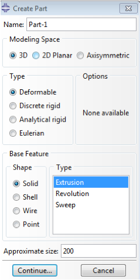
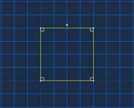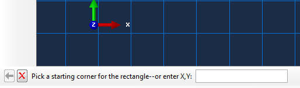 |
Module Property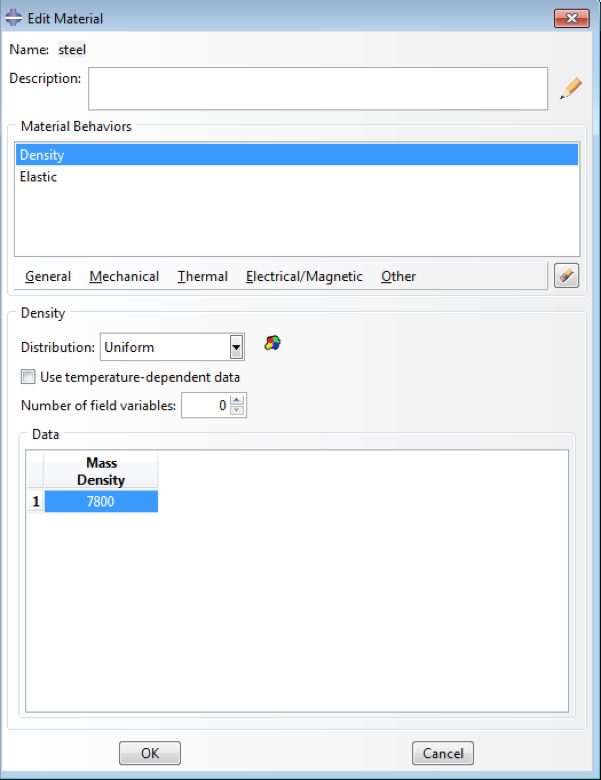
|
TIPS: As you go along different steps, CAE populates the model tree. You can always edit/revise model attributies by double-clicking on its corresponding field in the model tree.
Module Assembly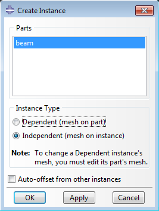 ABAQUS/CAE switches to the Assembly module.
|
Module Step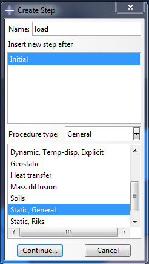
1. Click the Create Step icon 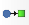.
The Create Step dialog box appears. 2. Name the step
Note: The Initial step is the default original step in Abaqus. Typically a fixed boundary condition is applied in this step, which we will perform in the next section. |
Module Load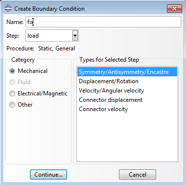 Abaqus/CAE switches to the Load module.
In the Viewport, you can see that Abaqus/CAE displays a downward-pointing arrow to indicate that the load is applied in the negative 2-direction, or \(y\) axis. |
Module MeshAbaqus/CAE switches to the Mesh module.
|
Module JobAbaqus/CAE switches to the Job module. 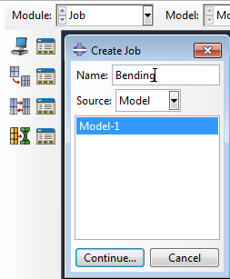
|
Module VisualizationAfter completion of the calculation, Abaqus/CAE switches to
the Visualization module. You can also enter the Visualization
module by selecting 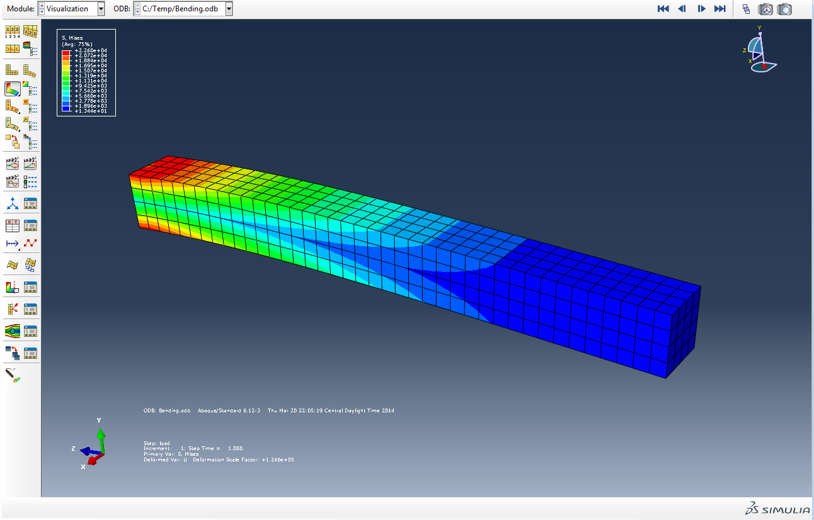 |
Optional: Using Sets
Abaqus CAE defines some default Sets during model creation by the user. We can define these sets for later use and name them during modeling as well. In here, we use some default node sets generated by CAE to calculate the total applied to the fixed side of the cantilever.
- Click on .
- From Create XY Data, select ODB field output and continue.
- In XY Data from ODB field Ouput,
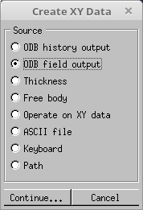
- From the variable tab, for output variables select Unique Nodal and then choose RF:RF2
- From Elements/Nodes tab, in the Method select Node Sets and SET-1. You can check highlighting checkbox to see if the right Node set is selected from the viewport.
- Click Save
- Click on and this time select Operate on XY data
- In the Operators field, select sum ((A,A,...))
- In the Name Filter, type *RF2* and hit enter
- In the table below it, select all items and click on Add to Expression button
- Finally click on Plot Expression and then hit Cancel. The maximum point on the plot corresponds to the total reaction force on the fixed side of the cantilever \(20 \times 200 \times 200 = 800,000 \textrm{ N}\) 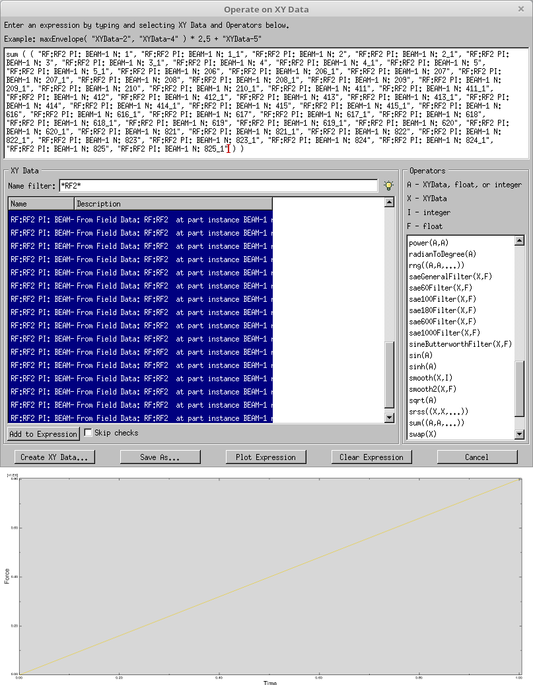
Theoretical Content
This example is predicated on Euler–Bernoulli beam theory.Credits
Neal Davis, Ruizhi Li, Binyue Hou and Masoud Safdari developed these materials for Computational Science and Engineering at the University of Illinois at Urbana–Champaign.
 This content is available under a Creative
Commons Attribution-NonCommercial 4.0 Unported License.
This content is available under a Creative
Commons Attribution-NonCommercial 4.0 Unported License.